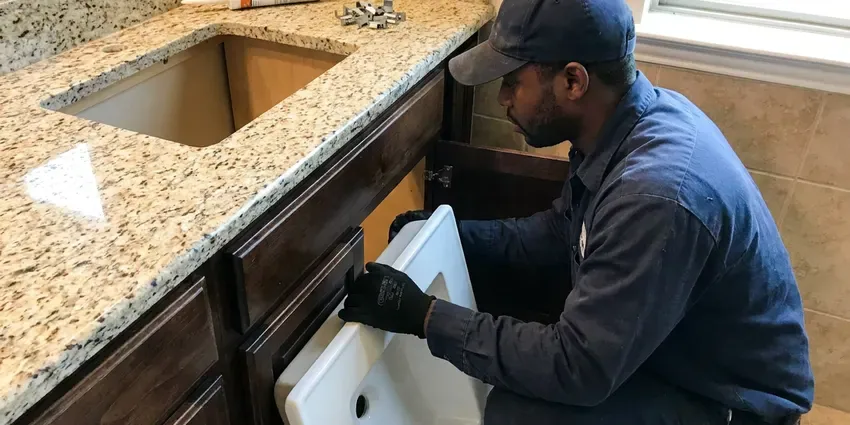

Sink Drain Replacement in Fargo, ND
When your sink drain in Fargo, ND is beyond repair, HPN Plumbing offers dependable replacement services. We handle all types of residential sink drains.
- Skilled Plumbers
- Upfront Pricing Every Time
- Quality Parts
- Guaranteed Work

Expert Sink Drain Services in Fargo, ND.
Schedule your sink drain replacement with our skilled team.
Leak-Free Sink Drain Replacement Service in Fargo, ND
HPN Plumbing provides top-notch sink drain replacement throughout Fargo, ND. Whether you're dealing with persistent clogs, leaks, or a completely broken drain assembly, our team can efficiently remove your old drain and install a durable, high-quality replacement, restoring full function to your sink.
Our expertise includes:
- Replace pop-up drain bodies, flanges and pivot rod assemblies
- Ensure proper sealing and leak-free connections for new sink drains.
- Install new drain lines and P-traps

Additional Bathroom Plumbing Services in Fargo, ND
From toilets to showers, our bathroom plumbing team in Fargo, ND repairs, installs, and replaces every fixture with clean, code-compliant work.


Customers
Why Choose HPN Plumbing for Sink Drain Replacement in Fargo, ND?
Choosing HPN Plumbing for your sink drain replacement means you are getting top-tier service from local experts. We pride ourselves on clear communication and lasting results, ensuring your new drain functions perfectly.
- Transparent Pricing, We provide upfront, fair pricing for all sink drain replacement jobs, with no hidden fees.
- Licensed Plumbers, All our technicians are fully licensed, insured, and very experienced in drain system work.
- Complete Assemblies, We replace the whole drain path, not just the part that failed today.
Citywide Coverage
HPN Plumbing proudly serves every neighborhood in Fargo and the surrounding areas. No matter where you are located in Fargo, our team is ready to respond quickly to your sink drain replacement needs.
Experienced Team
Our plumbing team has deep experience with sink drain systems common in North Dakota homes. They are trained on the latest installation techniques and local plumbing codes to ensure every replacement is done correctly and safely.
Safety-First Approach
Corroded drains can have sharp edges and old drain lines can harbor bacteria, so we work with gloves and clean the area afterward. We never leave a sink without a working trap.
Trusted Certified Fargo Plumbing Services Professionals
At HPN Plumbing, we take pride in providing certified plumbing services throughout Fargo, ND. Backed by recognized industry credentials, our experienced plumbers combine technical skill with genuine customer care. Whether it is repair, installation, or maintenance, we follow strict safety and quality standards to deliver lasting results you can trust.
Call Us Now PHCC Plumbing Contractor Recognition
PHCC Plumbing Contractor Recognition Better Business Bureau (BBB) Accreditation
Better Business Bureau (BBB) Accreditation Angi Certified Pro
Angi Certified Pro ISO 9001 Quality Management Certification
ISO 9001 Quality Management CertificationDependable Sink Drain Replacement Services in Fargo, ND
Hard-Water Drain Damage Repair in Fargo, ND
Water softeners and filters are popular around Fargo because they extend the life of water heaters, dishwashers and faucets. Hard water builds scale inside pop-up bodies and on stopper rods, and over time this freezes the mechanism or snaps the pivot rod. We remove scaled parts and install new drains with smoother materials that resist buildup. We can also suggest softening options to protect the new drain.

Leaking Drain Assembly Repair & Replacement in Fargo
A leaking sink drain assembly, whether from a loose connection, a cracked pipe, or failed seals, can cause significant damage to cabinets and flooring. Our plumbers are adept at diagnosing the exact source of the leak and determining if a repair is sufficient or if a full replacement of the drain components is necessary. We make sure all connections are properly tightened and sealed with plumber's putty or silicone to prevent future leaks under your Fargo sink.
Commercial Lavatory Drain Replacement in Fargo
Commercial restrooms use offset grid drains and heavy-duty traps that see constant use. We replace these with ADA-compliant offset tailpieces and can add trap insulation kits where required. Work is scheduled to keep restrooms in service. Multi-sink restrooms can be finished in one visit.
P-Trap Replacement in Fargo
Traps fail from cracks, corrosion and repeated clog clearing. We replace old chrome or thin plastic traps with heavy-wall PVC or polished brass that matches exposed plumbing. Each trap is sized correctly and aligned so slip joints seal without strain. A new trap is one of the most affordable fixes under a sink.
Code-Compliant Drain Upgrades in Fargo
Older homes in Fargo may have sink drain systems that no longer meet current plumbing codes or are simply outdated. When we replace your sink drain, we ensure that all new components, including the P-trap, tailpiece, and drain assembly, comply with the latest North Dakota plumbing regulations. This not only prevents potential fines but also ensures the safety and efficiency of your home's plumbing system, improving drainage and preventing gas leaks.
Cost of Sink Drain Replacement in Fargo, ND
The cost of sink drain replacement in Fargo, ND can vary depending on the type of sink, the extent of the damage, and the materials used. Simple P-trap or tailpiece replacements might range from $150 to $350, while a full assembly replacement for a kitchen sink could be $250 to $600. Factors like access difficulty and the need to replace connecting pipes can also influence the final price. HPN Plumbing provides honest, upfront estimates before any work begins.
Utility Sink Drain Replacement in Fargo
Utility sinks in laundry rooms or garages often handle harsh chemicals, dirt, and heavy debris, which can accelerate drain wear and tear. HPN Plumbing provides robust utility sink drain replacement services, using industrial-grade components built to withstand tough conditions. We replace everything from the drain body to the P-trap and standpipe, ensuring efficient water removal and preventing back-ups. Our solutions are designed for durability and compliance with commercial-grade standards where needed.

Emergency Sink Drain Services in Fargo
A sudden, severe sink drain leak or complete blockage can be an emergency, causing water damage or leaving a sink unusable. HPN Plumbing offers emergency sink drain replacement and repair services to address critical issues quickly. Our team is equipped to respond quickly to your call in Fargo, diagnosing the problem and performing necessary replacements to stop leaks or restore drainage, minimizing disruption and potential damage to your home.
Sink Drain Replacement Near Me in Fargo, ND
Our local presence means faster response times and a team that understands the local water conditions and common plumbing issues affecting Fargo residents. You can count on us for efficient and expert service, right in your neighborhood, for all your sink drain needs.
When you need a reliable plumber for sink drain replacement, HPN Plumbing is just a call away. We're dedicated to providing the highest quality plumbing services to our neighbors in Fargo and the surrounding communities, making us the top choice for 'sink drain replacement near me'.
HPN Plumbing at a Glance
- Licensed and insured plumbers serving Fargo, ND
- Same-day appointments and 24/7 emergency response
- Clear written estimates, no hidden fees
- 4.9-star rated by 408+ North Dakota customers
Fargo Map
Fargo Information
- Population
- 133,188
- Area codes
- 701/402/218
- Service area
- Fargo and communities within 40 miles
- Nearby
- West Fargo, Horace, Wahpeton, Valley City
Water softeners and filters are popular around Fargo because they protect water heaters, dishwashers and faucets. Aging metal drain stubs are also common in older homes, so replacing a worn sink drain in Fargo, ND prevents slow leaks that slowly rot vanity cabinets and subfloors.
Expert Services
Trust our professionals for reliable HPN Plumbing solutions in Fargo, ND.
Our Specialized Plumbing Services in Fargo, ND
At HPN Plumbing, we provide a complete range of plumbing services across Fargo, ND. From leak detection to full system installations, our team ensures fast, precise, and affordable service for both residential and commercial properties. Explore our core services below:


How Our Sink Drain Replacement Process Works in Fargo, ND
A new sink drain is a fast job when it is done in the right order.
Request a Quote
Contact us at (701) 403-1348 to schedule an appointment. We'll discuss your drain issues and set up a good time for our plumber to visit your home.
Diagnosis & Plan
Our expert plumber will inspect your current sink drain, diagnose the problem, and recommend the best replacement options. We'll provide a transparent quote before any work begins.
Professional Installation
Once approved, we'll carefully remove the old drain and install the new components, making sure all connections are sealed properly and tested for leaks and proper flow.
Frequently Asked Questions About Sink Drain Replacement in Fargo
The cost for sink drain replacement in Fargo, ND typically ranges from $150 to $600. This depends on factors like the specific drain part needing replacement (for example, a P-trap, tailpiece, or full assembly), the type of sink, and labor involved. We provide transparent, upfront pricing after a thorough assessment.
It does. Scale builds up on pop-up rods and seals, causing sticking and leaks. Regular cleaning and a water softener can lengthen the life of your drain.
A sewer odor usually means a dry or improperly installed trap, or a venting problem. We check the trap seal and vent when we replace any drain.
PVC is affordable, corrosion-proof and ideal inside a vanity. Brass looks better on exposed pedestal or wall-mount sinks but costs more.
For a simple like-for-like replacement of a P-trap or tailpiece, permits are usually not required in Fargo. However, if the replacement involves significant alterations to the plumbing system, relocating a drain, or changing pipe sizes, a plumbing permit may be necessary to ensure compliance with local building codes. We will let you know if a permit is needed.
Absolutely. HPN Plumbing provides complete sink drain replacement services for both kitchen and bathroom sinks, as well as utility sinks. Our experienced technicians are equipped to handle the drain configurations of all types of residential sinks in Fargo.
No, a like-for-like drain replacement usually does not need a permit. Relocating drain lines in the wall may, depending on your local building department.
While some minor drain repairs might seem DIY-friendly, replacing an entire sink drain assembly requires specific tools, knowledge of plumbing codes, and careful sealing to prevent leaks. Improper installation can lead to significant water damage or recurring issues. We recommend hiring a professional from HPN Plumbing for a reliable and code-compliant replacement.
What People Are Saying About Our Plumbing Experts?

Mark T.
When our office needed drain cleaning, HPN Plumbing provided quick, reliable service. The plumber arrived on time and made sure every drain flowed perfectly before leaving. Very satisfied.
Drain Cleaning · Wahpeton, ND
James P.
Our commercial plumbing system had a leak under the sink, and HPN Plumbing handled it professionally. The plumbers arrived quickly and restored everything without disruption to our customers.
Commercial Plumbing · Fargo, ND
Sofia M.
Two new toilets installed in one visit, no mess left behind, and the tech even adjusted a faucet he noticed was dripping. Fair pricing and really friendly.
Toilet Installation · Jamestown, NDRobert G.
The trenchless sewer replacement saved our front yard. They walked us through the camera inspection footage first so we knew exactly what we were paying for.
Sewer Line Replacement · Jamestown, NDLaura S.
I scheduled a water heater replacement, and the team made the process smooth and affordable. The new unit works perfectly, and they cleaned up after completing the job.
Water Heater Replacement · West Fargo, ND
Patricia H.
We had a slab leak that two other companies could not find. HPN Plumbing located it in under an hour, explained our options, and the price matched the quote to the dollar.
Slab Leak Repair · West Fargo, ND